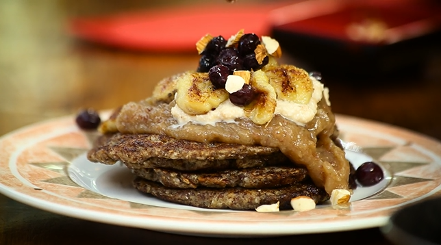

Panqueques a base de banana, harina y coco. Ideales para acompañar tu desayuno o cuando quieras algo dulce. ¡Una receta muy simple y llena de nutrientes!

Ingredientes:
5 plátanos maduros
1/2 taza de coco rallado
3/4 taza de semillas de linaza (usar 1/2 de harina)
Vainilla a gusto
Pizca de sal
Ppcional relleno de frutos secos, deshidratado o chips de chocolate